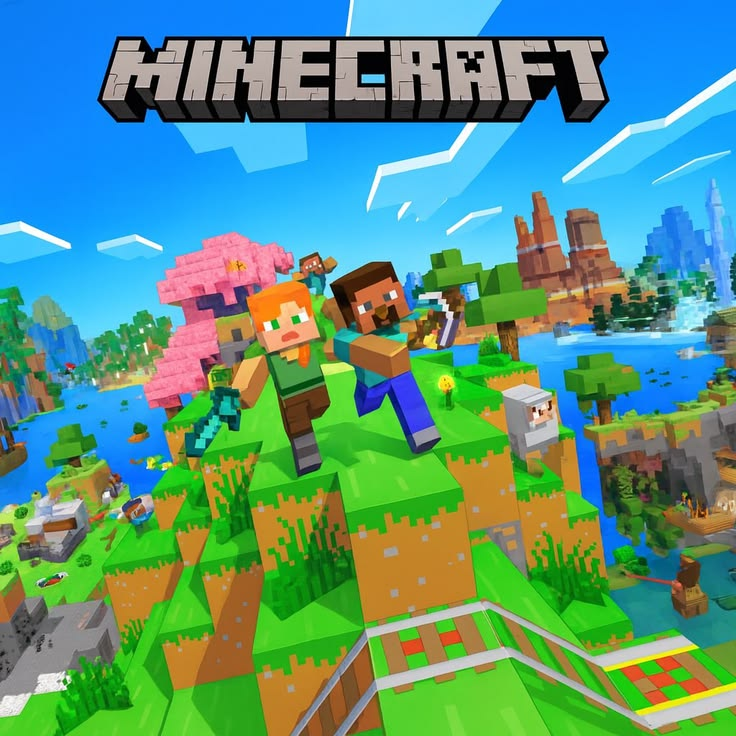

3-Latest News :
1-Farewell Los Santos... What can we expect from the world of the upcoming GTA VI?
- Leaks continue to swirl around one of the most anticipated games in history. Reports indicate that the game will take us back to the famous "Vice City," but with a map twice the size of the previous installment. The game will focus on a drama-filled dual protagonist story, featuring an advanced AI system for NPCs and unprecedented environmental interactions. Analysts expect this title to set new benchmarks for current-gen graphics, especially by fully utilizing the capabilities of 4K platforms Learn more....

2-Endless Innovations: A Look at the Latest Additions to the World of Minecraft :
- "Mojang" has released a new update focused on exploring deep biomes. The update introduces new mobs and rare building materials that allow players to design more complex mechanisms. The goal of this update is to enhance the adventure element in Survival mode, adding technical challenges that require players to engage in deeper planning for building their fortresses. Additionally, game performance has been significantly improved on mobile devices Learn more....

3-From the small screen to the cinema... Mario prepares for an intergalactic journey:
Following the overwhelming success of the first Mario movie, rumors have been mounting regarding a Super Mario Galaxy film project. The movie is expected to take us on a stunning visual journey through space, focusing on the character "Rosalina" and exotic galaxies. Nintendo aims to use these films to expand its fan base and present gaming worlds in a cinematic way that suits all ages, while maintaining the playful spirit that characterized the original game Learn more....